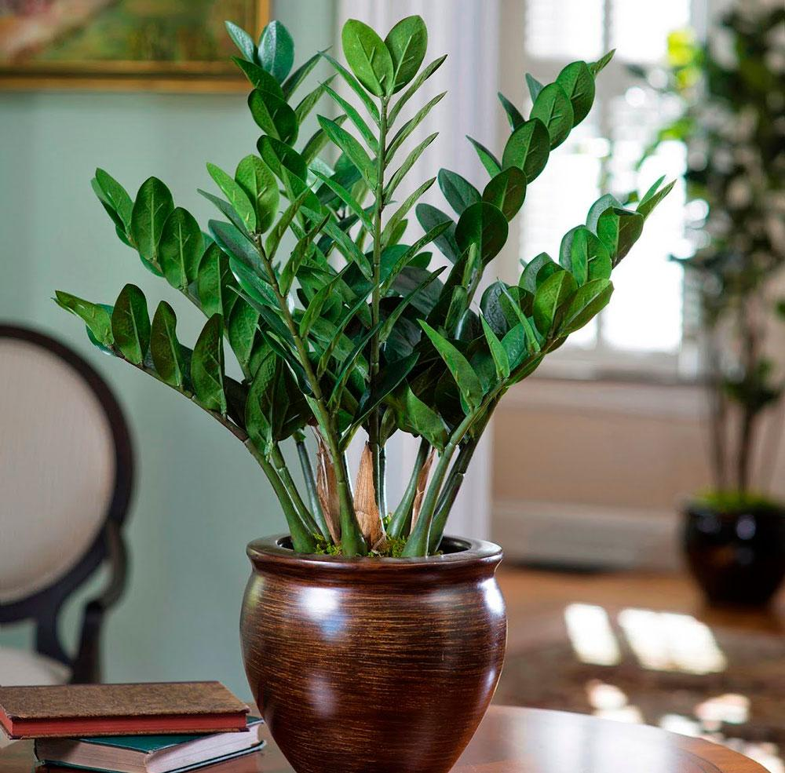

Замиокулькас
Описание
Замиокулькас имеет толстый, сочный стебель и глянцевые, темно-зеленые, пальчатые листья. Листья насчитываются от 3 до 6 ветвей и могут достигать длины до 60 см. Они растут рядом друг с другом в форме подушки, что придает растению густой и компактный вид.
Галерея

Советы по уходу
Требования
Замиокулькас относительно невысок в требованиях и адаптируется к различным условиям. Однако растение предпочитает теплый климат, умеренное освещение и регулярный полив. Оно также может процветать во многих типах почвы, но лучше всего расти в хорошо дренированной почве.